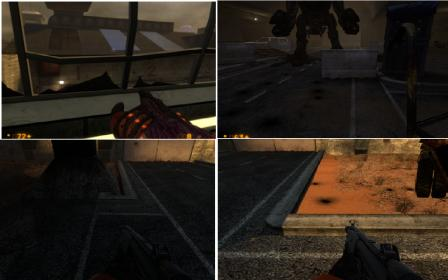
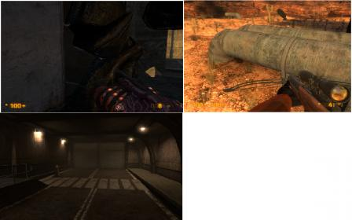

First off, thanks for the acknowledgement in the Readme file. If you could do me a favor, on the next release use my real name, Tian Wang. Who knows, this could come in handy  . Now on to business…
. Now on to business…
0.81b critique
General impressions
It’s impressive how many fixes you’ve made to this version and this has really improved the visual appearance and gameplay of the mod. However, there’s two major issues that have cropped up. The first is optimization…some sections seem to perform much more poorly now on my computer compared to the previous release and I’ve been getting random crashes more frequently. The second is balance. Most of the battles are now giving a little too much of an edge to the HECU…they win most of the key engagements on hard and this is negatively impacting the storytelling. Ideally, the aliens should win all engagements (w/the exception of the tank battle) but just by a narrow margin.
With respect to health/ammo, the new changes have improved gameplay significantly. The only issue is in C2A5G, where the health placements are a little too generous. The problem area extends from the .50 cal vort shootout leading up to the car shop. Most of my new health/ammo suggestions will focus on rearranging the placements, w/the overall effect of removing 2 health packs. Again, I’ll outline everything by order of playthrough for easy tracking. Italics indicate new suggestions. Past suggestions that I’ve made for you will be kept concise. Red=critical, Yellow=important, Green=ammo/health placement, Pink=enemy placement
ALSO, DON’T CHANGE THAT SATCHEL SCENE! IT’S PERFECT! THE MARINE IS THE ONE WHO OPENS THE HATCH TO CHECK TO SEE IF YOU’RE ALIVE AND TO SHOOT YOU IF YOU ARE. IT MAKES PERFECT FRICKIN SENSE!
General
[COLOR=‘Yellow’]Lower the road extending from the TOW courtyard to the end of C2A5G so that it is at the level of the desert terrain. Add dirt to some sections of the road to create a more blended appearance. After much mulling around and testing, I do feel fairly strongly about this change in C2A5G (less so in C2A5H) as this will bring your work more closely in line w/the rest of ST. Again, if you consider doing this, try to get it out by the next beta for bug testing purposes.
[COLOR=‘Red’]Improve the appearance of C2A5G and C2A5H in the map editor.
[b]C2A5G
.50 cal vort shootout[/b]
Add xenofauna by the silo door (just the moss).
[COLOR=‘Lime’]Delete the magnum and all magnum ammo by the dead HECU (to be rewarded later). Replace w/generic shotgun or MP5.
Garage
[COLOR=‘Yellow’]The AI battle is about 60/40 on Hard, w/a slight edge to the HECU. What tips the battle in their favor is if they can kill the Agrunt quickly. I think having an even match-up here is bad gameplay wise because it usually just leaves one nearly dead unit or 2 nearly dead units for the player to kill. After that, there’s really nothing much to do in the garage, which makes the area kind of boring. [COLOR=‘Pink’]Consider replacing a vort with an Agrunt or use your previous version to tip the balance more to the aliens.
In general, needs a few more signs to enhance its detail. Put “Exit” signs over the spiral driveways. Add things like “Stairwell,” “Floor 1-3” etc.
[COLOR=‘Lime’]Delete the health kit by the zombie ambush on the 1st floor. Replace w/a battery (so 2 total there). This accounts for the deleted 3rd battery in the car shop.
1st floor door to the stairwell should be openable from w/in the garage to keep consistency w/the rest of the stairwell doors.
Don’t park the hummer in the handicap zone of the 1st floor! Move it over to the next spot.
The color of the pavement in the spiral driveway is noticeably different from the pavement in the garage. Ideally, they should match.
[COLOR=‘Yellow’]The new windows atop the car shop have a weird opacity effect where they disappear entirely when viewed from certain angles. Get rid of this effect if possible or give the windows a slight green tint so that they are still visible from all angles. Also, the windows are too new for the old buildings and don’t fit…they will look better w/a frame/grid support (image 1 top L, image 3,4).
[COLOR=‘Pink’]Replace the vortigaunt on the 3rd floor w/a zombie and/or headcrabs. Realistically, he should have been helping his buddies during the garage fight. This change also reinforces your zombie attack on the 1st floor. [COLOR=‘Lime’]Delete the health kit by the HECU and replace w/a magnum and 1 magnum ammo box.
Marines vs aliens
[COLOR=‘Yellow’]There’s a fairly major optimization problem here that didn’t exist in the previous version. The game crashed twice for me as I attempted to run to the AC unit from the 3rd floor garage. A major drop in framerate starts the moment the aliens spawn.
[COLOR=‘Yellow’]Move the blue crates such that they do not overlap the garage door. They should be placed between lots 2 and 3 to appear more realistic. This will also make them more equidistant to the current alien and HECU spawns. I’m highlighting this as an important issue because it is adversely affecting the AI fight balance. You must fix this first BEFORE you rebalance.
[COLOR=‘yellow’]On Hard, the HECU win ~75% of the time. There’s several reason for this: 1) by flipping the HECU spawn position, you’ve allowed them to use the cover of the blue crates extremely well, which allows them to exploit the alien AI by forcing both the Agrunts and vorts to melee. 2. Vorts have a slower attack rate, do far less DPS and have less health than the HECU. Their energy attacks frequently miss w/the crates providing cover…and a couple of missed shots is all you need to tip the favor to the marines. Add another vort spawn once you move the crates and test from there.
[COLOR=‘Lime’]Delete 1 medkit.
Turn off the light on top of lot 1. All of the other lights are off and having one on during midday is a little unusual. You’d have to be as dumb as a rock to not realize you need to go into the vent, esp. w/that blatantly obvious ladder.
Vent drop/car shop
If possible, make it so that player can see through the bullet holes but keep the lighting effects.
[COLOR=‘lime’]Delete 1 of the batteries the player drops down onto (so 2 total). You don’t need so much of a buff w/only 3 marines plus the snarks now work wonders!
Delete the flying sparks when using the lift w/the extensions. A functional piece of equipment shouldn’t be grinding against the shop’s floor.
[COLOR=‘Yellow’]The windows of the surburban do not lower when the vehicle itself is lowered. They just stay in the air.
TOW courtyard
[COLOR=‘yellow’]Optimization feels slightly worse here now but nothing major.
If you keep your current layout, delete the parking bumper where the old lamppost used to be and replace them w/a pair of highway bumpers (you used 3 of them in the garg scene), which will look better (image 1 top R).
Delete the big ugly black mark on the Agrunt hangar door but keep the 2 little ones. You already used the big mark outside the garage and the materials attached to them are different from the hangar door. Plus the mark makes it look like the HECU were trying to destroy the door to unleash a flood of Agrunts on them, which makes no sense. Honestly, I don’t think you need to mark the door to tell the player where to go but if you want to, a much better effect would be to introduce some small cracks in the door and add a pounding effect (like the naked grunt in QE or the zombie in the opening of C2A5G, but more frequent) to show that the Agrunts are trying to break down the door. This would make the TOW emplacement make even more sense, as the marines are trying to set up a trap to defend themselves.
[COLOR=‘lime’]Move the deployable sentry to the back of the M35. It actually works more effectively when placed by the vehicle because it’s more accurate at close range, lasts longer w/the vehicle providing cover and diverts hornets when placed away from and off-sides to the player. Plus it prevents the sentry from backfiring on the player…this happened to me several times in the courtyard. Add some green crates on the vehicle and some undeployed turrets to improve believability. Note there is also a bug w/the sentry. If you tap it too hard against a vehicle, you will destroy it…I first noticed this w/the sentry after the TOW courtyard.
Delete the cactus in the little garden. It’s abutting the rock and looks unnatural near the tree and other leafy plants.
The AC unit is illogically placed as it’s “protecting” the main entrance. Perhaps change it to something else, shrink it or move it closer toward the petrol station to free up space, especially now w/the hummer acting as effective cover.
Delete the metal railings on top of the hangar entrances. Functionally, they serve no purpose and are inconsistent w/the design in the rest of ST.
[COLOR=‘yellow’]Harrier is still tilted just prior to take off. It also needs an exhaust trail immediately after takeoff as it currently looks like it’s magically floating. Increase the sound of the takeoff…I didn’t hear anything at all.
Background textures are too orange and stand out. They need a little more detail.
Road leading to Osprey
Delete the plants growing on the first large rock.
[COLOR=‘Lime’]Move the sentry from the M35 to the LAV courtyard and rest it on top of a green crate. As it can’t be controlled by the player and has limited ammo, putting it closer to the actual battle will give the player much more control over what and when it targets.
[COLOR=‘lime’]Delete the MP5 grenades, as they encourage script breaking during the tank battle. They can be moved to the .50 cal in C2A5H or the gasworks (by the HECU corpses).
Osprey/LAV courtyard
[COLOR=‘Yellow’]Still the area in C2A5G w/the biggest FPS drop…feels the same compared to the previous version though.
[COLOR=‘Pink’]On Hard the HECU win here 60-70/40-30, but I think this victory should almost always favor the aliens. Consider replacing a vort w/an Agrunt, especially now w/the LAV buff and the marines that come out firing.
[COLOR=‘Yellow’]Have the marines guarding the LAV spawn BEFORE the silo door opens. Currently, the player sees 4 floating machine guns and then 4 marines magically appear. It’s cute.
[COLOR=‘yellow’]Agrunts must be able to melee the LAV from ALL ANGLES. Currently they can only attack the SIDES of the LAV so when the grunts get into melee range, most of them will just stand there and look stupid.
The white desk underneath the army tent looks really out of place. Either delete it and put the map on one of the green crates or add some chairs.
[COLOR=‘Red’]Destroyed Osprey debris causes damage to the player. This needs to be fixed. If your work gets integrated into BMS, let the devs know about this.
Fix the J-hook section underneath the hanger to make it more consistent w/the new pavement design and delete the plants growing out of the pavement edge. Otherwise good work on the revision to this area…it looks much better now (Image 1 Bot L).
A white light is missing on the ramp side of the Osprey helipad.
A small section of the desert terrain texture is missing by the far road (Image 1 Bot R).
Ad[COLOR=‘Lime’]d a battery inside one of the destructible crates below the helipad.
C2A5H
Opening section
Have the vortigaunt face the health charger and use the heal player effect in HL2 to create the sense that it’s using the charger. Alternatively scrap this sequence, make the security zombie room accessible and place the charger in there. This looks better anyway.
The alien grunt that flings the marine has some texture issues when it uses its melee attacks on the player (hornet arm clips through unbroken wall).
[COLOR=‘Yellow’]Add a pair of dead alien grunts and a vort near the broken wall to justify the new machine gun fire and show why the section was targeted for destruction. Reduce the sound of the gun fire (and possibly make the pattern less repetitive) as it currently seems like it’s coming from point blank range while the player is still in the building.
The inaccessible room w/the dead Barney is too new/clean for this building. It should look more like the room containing the marine-throwing Agrunt.
Tank battle
[COLOR=‘yellow’]Still the area that consistently crashes for me after several reloads. The optimization here feels worse now, w/more framerate drops.
Extend the swath of destruction cut by the manta beam to the tank. There’s a small segment missing.
The outside door of the hut leading to C2A5I should be locked like the inside. This makes the most sense as why would one door be locked and not the other?
Satpipe and furnace
Consider fixing the embedded effect of the furnace.
When placing an explosive barrel in the furnace, the detonation should hurt the player. Alternatively delete the barrels (why would anyone put explosive shit by a furnace anyway) and move the blue barrels over to the “barrel storage” area.
[COLOR=‘yellow’]For the furnace puzzle proper, consider redesigning the pipes such that the horizontal section of the blue pipe is swapped w/the yellow pipe. You will have to decrease the height of the vertical segment of the blue pipe to accommodate this change. Then put the valve holder on the TOP floor and the valve on the BOTTOM floor. This makes sense as the valve fell due to gravity and gameplay wise would make players hunt for it…currently this “puzzle” seems a little too obvious as the valve is right next to the blue pipe.
I think you overdid it on the amount of “Danger” signs in the furnace room, as the puzzle really isn’t rocket science. Perhaps move the one by the medcharger onto the blue pipe, just above the valve. Otherwise give the blue pipe a label, (e.g. gas line, aux gas line).
Gasworks to end
[COLOR=‘yellow’]FPS drop here is unchanged.
[COLOR=‘yellow’]If possible, improve the crossbow collision issues on the blue door leading to the gasworks. This is the only other place where this is potentially an issue.
[COLOR=‘Lime’]Add a pair of MP5 grenades to the stack of dead HECU if it was not placed by the .50 cal in C2A5H.
[COLOR=‘Pink’]Adjust the position of the 1st vort the player sees when entering the gasworks (perhaps farther back). His reaction time is extremely delayed compared to the other spawns.
[COLOR=‘Yellow’]There’s some AI pathing issues here. It’s very hard for the vorts and Agrunt to get into melee range. Oftentimes they just stand there and look stupid.
[COLOR=‘Lime’]Delete 1 medkit on the crate sitting at the start of the steam puzzle. If you want, you can put this on Barney’s desk by the uranium to prep the player for the .50 cal spawn.
[COLOR=‘Yellow’]The black pipe that you first need to jump onto in order to do the steam puzzle MUST be expanded such that the player can walk onto it. I still feel strongly about this as it’s a very tricky jump to make. The medkits sitting there are simply a distraction rather than a fix to a design flaw. You may need to change the placement of the 1st steam jet as well if you fix this. However, if you’re adamant about not fixing it, move the M35 closer to the pipes to minimize risk of fall damage.
The locked blue door on the second floor should be unlockable from the inside once players get in. This is consistent w/the rest of BMS.
[COLOR=‘yellow’]The tripmine layout is still a little lame, as players can hug the opposite side and detonate several mines. The best solution might be to add tripmines to the beam side of every current tripmine (but make it look like only one beam is connecting both mines). That way, the reckless player is guaranteed to take damage.
When you modify Barney’s animation, get him to push the big red button on the security access panel…that’s obviously the correct button to unlock the doors.
[COLOR=‘red’]The blue door that Barney opens MUST be unlockable by the player once he’s given you security clearance since the green light is on. Currently, you can kill the Barney after he gives you clearance and trap yourself in the room.
[COLOR=‘yellow’]Replace the downed Apache script w/a 3 Osprey evac script once Barney opens the silo door. This reduces the problem of 2 downed choppers so close together and greatly reinforces the FUBAR/evacuation concept introduced in C2A5I and FaF.
[COLOR=‘Pink’]Position the Agrunt spawn IN FRONT of the tank when the aliens spawn for the .50 cal. Currently he has pathing issues behind the destroyed tank.
[b]C2A5I
Garg chase[/b]
[COLOR=‘Pink’]Snark placement is still a little too close to the entrance. It might work better if it were placed AFTER the 90 degree turn once you enter the pipe (midway between the long segment).
There’s a dead red light in the snark tunnel…not sure if this is intentional but it might look better if it actually illuminated.
Now that players can run into the garg’s entrance site, there should be a large hole in the wall that’s inaccessible to the player because of debris to show where he came from. This doesn’t need to be scripted if it’s placed really far back by the hangar door.
[COLOR=‘Yellow’]Remaining garg troubles: he has clipping issues when he’s trying to pry open the silo door. When patrolling the water, his foot often lands on the air rather than on the floor. Fix this if possible. Now that the garg will chase you, he will sometimes pin you and prevent you from moving but he will not kill you (Image 2, top L). The garg’s patrol paths when you are in the water seem messed up now. He no longer patrols the edges of the pool or connecting water area. Instead, he takes 1-2 steps and then turns around, forming a very small circle.
[COLOR=‘yellow’]You can see the ground through the two pipes closest to the strike tower ladder. These are also the only pipes that the player can clip through. Both issues need to be fixed (Image 2 Top R).
There is plant growing on a rock near the fence. Delete it.
Improve the effect when an artillery shell hits the water. Currently the single artillery shell generates multiple small splashes in the water or none at all. The impact should look like a diver hitting the water, but greater in magnitude.
Destroying the explosive crates by the radar tower should trigger it to fall if the detonation is near the crates…I think that was how it was meant to be originally.
Soundscape the tunnel into FaF. Add some occasional airstrike or artillery effects (not as frequent or loud as in HL, as Gordon may have called in the last strike to the area). Some falling debris and a cracking ceiling would be nice.
At the very end of the tunnel to FaF, there is a distinctly disjointed appearance of the central white line in the road between the segment before the white stripes and the segment after. This looks incredibly stupid and can easily be fixed by extending the whites stripes to the garage (Image 2 Bot L).




{kind=link}
{kind=link}
{kind=link}
{kind=link}
{kind=link}
{kind=link}
{kind=link}
{kind=link}
{kind=link}
{kind=link}
{kind=link}
{kind=link}
{kind=link}
{kind=link}
{kind=link}
{kind=link}
{kind=link}
{kind=link}
{kind=link}
{kind=link}
{kind=link}
{kind=link}
{kind=link}
{kind=link}
{kind=link}
{kind=link}
{kind=link}
{kind=link}
{kind=link}
{kind=link}
{kind=link}
{kind=link}
{kind=link}
{kind=link}
{kind=link}
{kind=link}